06.4 행동 가치 함수(Q 함수)와 벨만 방정식
상태만을 고려한 상태 가치 함수 v(s)를 넘어, 특정 상태에서 임의의 행동을 실행했을 때 얻는 기대 가치를 정의하는 행동 가치 함수(Q 함수, q(s, a))와 그 벨만 방정식을 공부합니다.
요정 지니와 도로시의 기분 좋은 판서 정리를 보며 두 가치 함수의 신비로운 연결 구조를 완벽하게 해부해봅시다!
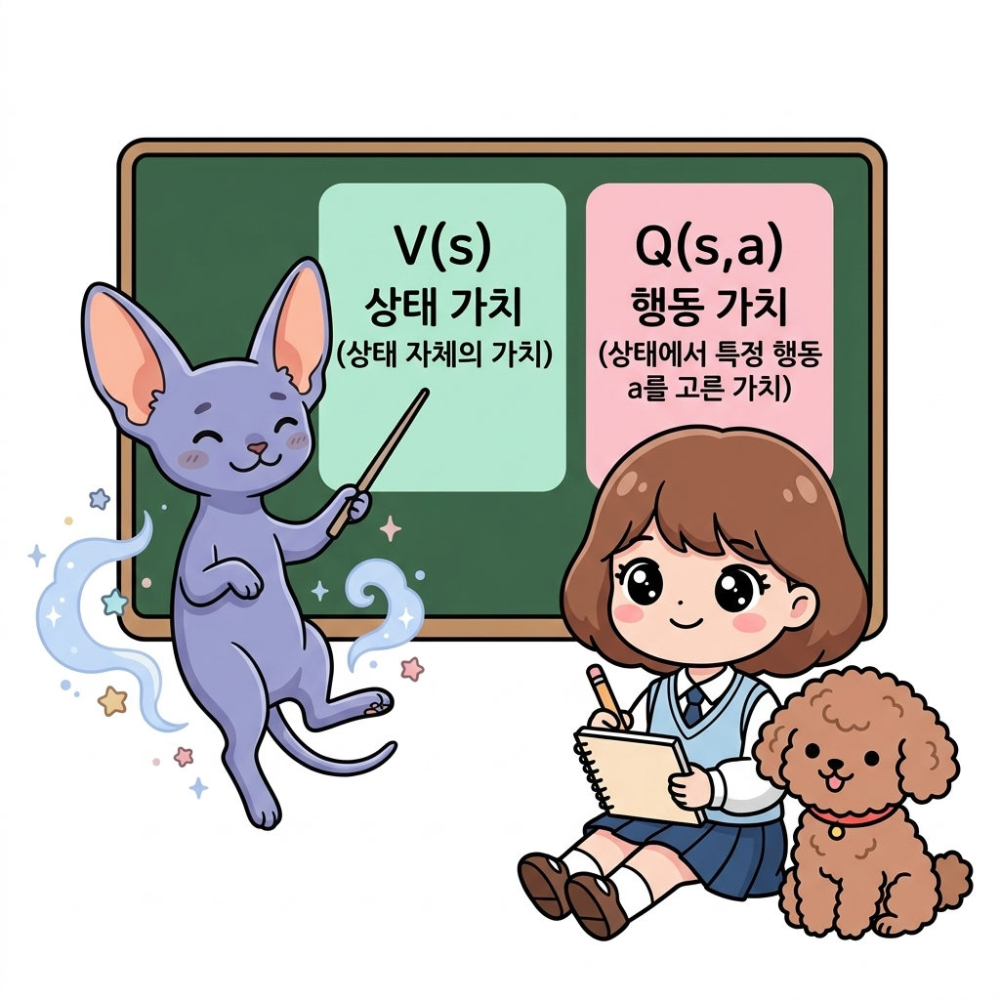
그림 06-4 상태 가치 V(s)와 특정 행동까지 취한 상태의 가치 Q(s,a)의 핵심적 가치 개념 대조를 칠판으로 설명하는 지니와 도로시
이번 절에서는 행동 가치 함수action-value function를 새롭게 소개합니다.
행동 가치 함수는 상태 가치 함수와 마찬가지로 강화 학습 이론에 자주 등장하는 중요한 함수입니다.
지금까지는 상태 가치 함수를 사용하여 벨만 방정식을 도출했습니다.
이번 절에서는 행동 가치 함수의 정의식을 살펴본 후 행동 가치 함수를 이용한 벨만 방정식을 도출하겠습니다.
NOTE_ 이 강의에서는 설명을 간결하게 하고자 상태 가치 함수를 단순히 ‘가치 함수’라고 줄여 쓰기도 합니다. 또한 행동 가치 함수는 관례적으로 Q 함수Q-function라고 부릅니다. 그래서 이 책에서도 행동 가치 함수를 Q 함수로 표기하기도 합니다.
06.4.1 행동 가치 함수
먼저 이전 절에서 깊이 있게 배웠던 상태 가치 함수(State-Value Function)를 다시 한번 복습해보겠습니다.
\[v_{\pi}(s) = \mathbb{E}_{\pi}[G_t \mid S_t = s]\]수식을 자세히 들여다보면, 상태 가치 함수 vπ(s)에는 두 가지 핵심 전제 조건이 걸려 있습니다.
- 조건 1 (현재 위치): 시간 t일 때 에이전트가 위치한 현재 상태가 s이어야 합니다(St = s). 즉, 평가의 시작점이 상태 s로 고정됩니다.
- 조건 2 (행동 기준): 앞으로 에이전트가 취할 모든 행동은 현재의 정책 π를 충실히 따라야 합니다(기댓값 기호의 아래첨자 π).
즉, 상태 가치 함수는 “내가 지금 상태 s에 서 있다면, 앞으로 현재 정책 π대로 살아갈 때 평균적으로 얼마의 총 보상(기대 수익)을 얻을 수 있는가?”를 평가하는 상태 자체의 종합 성적표입니다.
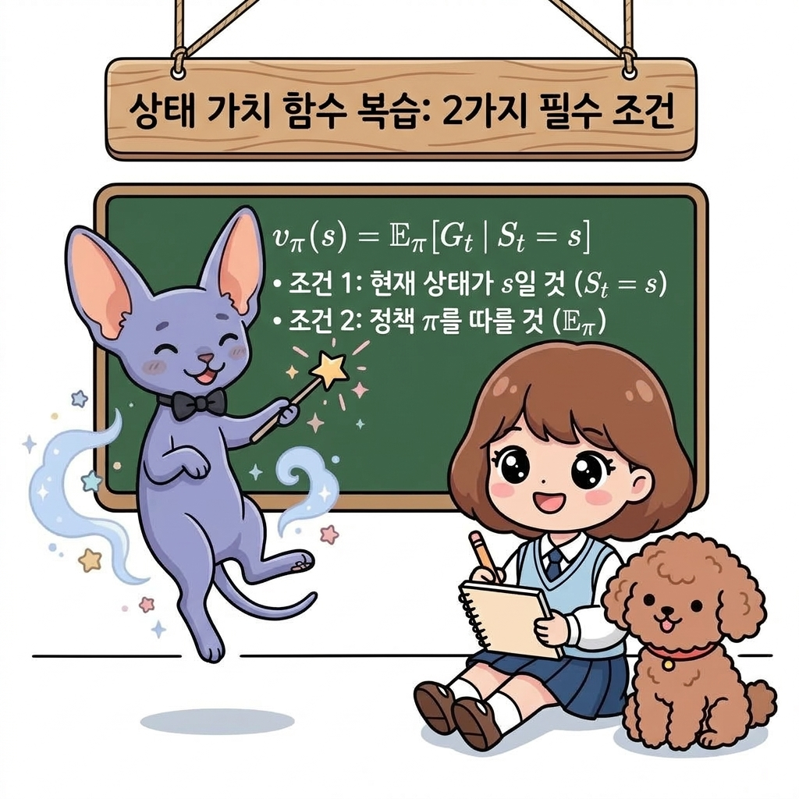
그리고 이 상태 가치 함수의 조건에 ‘지금 취할 특정 행동 a‘를 조건으로 추가할 수 있는데, 이것이 바로 강화학습에서 가장 중요한 행동 가치 함수(Action-Value Function, Q 함수)입니다!
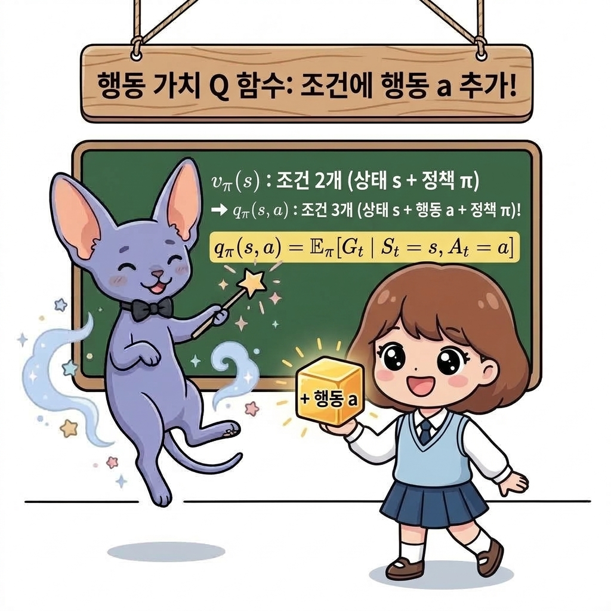
수식으로는 다음과 같이 조건절에 At = a를 덧붙여 정의합니다. \(q_{\pi}(s, a) = \mathbb{E}_{\pi}[G_t \mid S_t = s, A_t = a]\)
상태 가치 함수가 단지 “내가 지금 교실(s)에 있으면 평균 몇 점일까?”라는 장소 자체의 가치를 묻는다면, 행동 가치 함수는 한 걸음 더 나아가 “내가 지금 교실(s)에서 ‘공부하기(a)’를 실천하면 앞으로 평균 몇 점을 얻을 수 있을까?”라는 구체적인 행동의 가치를 묻습니다.
이처럼 조건에 행동 a가 추가됨으로써, 에이전트는 각 상태에서 선택할 수 있는 여러 행동들의 가치를 하나하나 따로따로 분리하여 평가할 수 있게 됩니다.
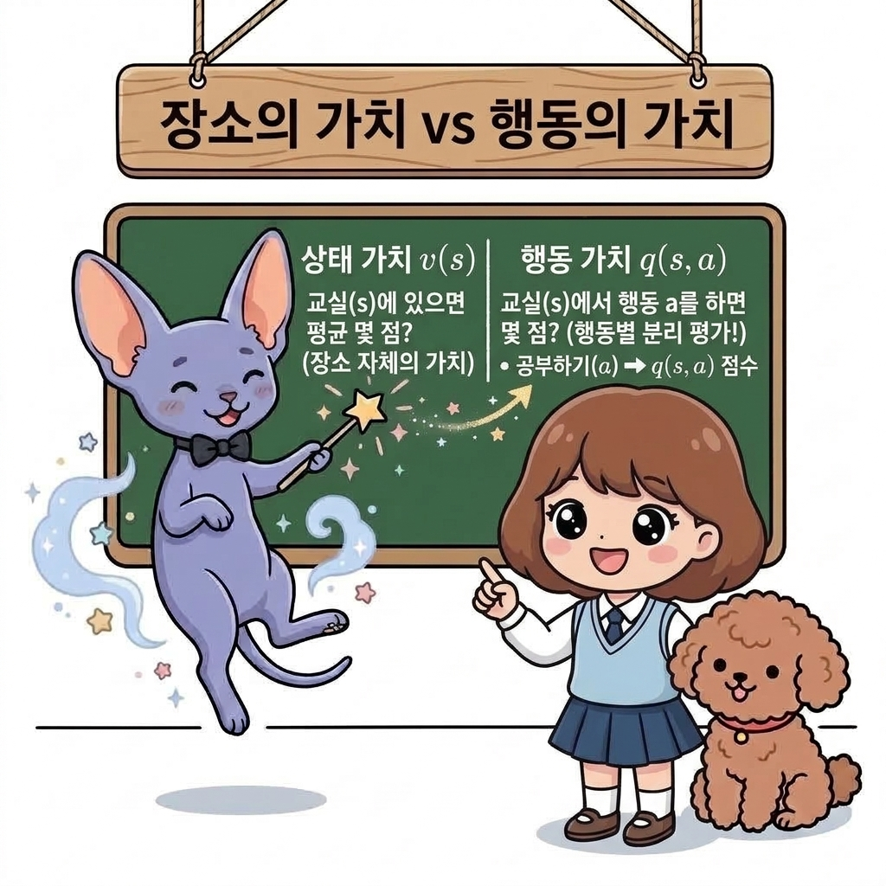
Q 함수 qπ(s, a)의 핵심 메커니즘은 다음과 같은 2단계 시간 전개로 이루어집니다.
- 시간 t (첫 번째 행동): 상태 s에서 지정된 특정 행동 a를 취합니다.
- 시간 t + 1부터 (이후의 행동들): 방금 취한 행동의 결과를 맞이한 다음 상태부터는 다시 평소의 정책 π에 따라 행동을 결정합니다.
이때 시간 t부터 미래로 이어지는 모든 보상의 할인 누적합(기대 수익)의 평균값이 바로 qπ(s, a)입니다.
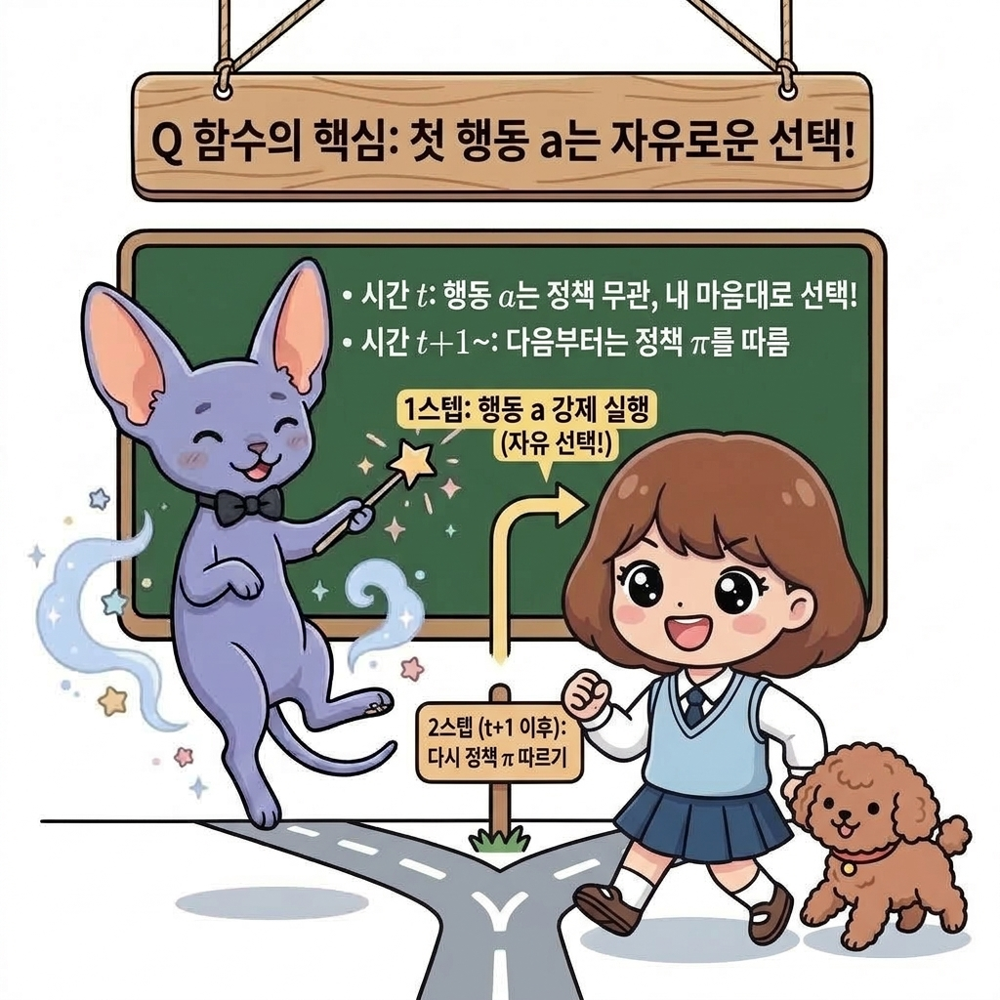
CAUTION_ qπ(s, a)의 첫 번째 행동 a는 현재 정책 π와 완전히 무관하게 자유롭게 선택할 수 있다는 점이 가장 중요합니다! 현재 정책 π가 특정 행동을 선호하든 기피하든 상관없이, 우리는 “만약 이 행동 a를 강제로 질러보면 어떻게 될까?”를 마음껏 가상으로 시도해볼 수 있습니다. 그리고 그 첫 행동의 결과로 넘어간 다음 스텝(t + 1)부터 비로소 원래 정책 π를 성실히 따르게 됩니다.
백업 다이어그램으로 보는 두 가치 함수의 결정적 차이
Q 함수가 상태 가치 함수에 ‘행동 a‘를 조건으로 추가한 것이라는 사실은 백업 다이어그램(Backup Diagram)을 통해 시각적으로 비교해 보면 그 차이가 확연하게 드러납니다.
그림 06-11 상태 가치 함수와 Q 함수의 백업 다이어그램 구조 비교
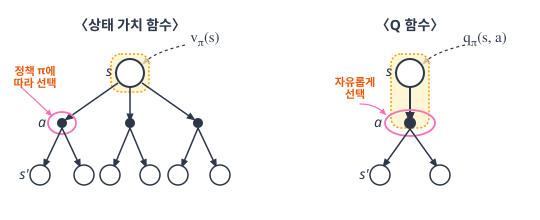
백업 다이어그램에서 흰색 원(○)은 상태 노드를 나타내고, 검은색 점(●)은 행동 노드를 의미합니다.
위 [그림 06-11]의 두 다이어그램을 비교해 보면 시작 지점과 첫 분기에서 매우 흥미로운 차이를 발견할 수 있습니다.
1. 상태 가치 함수 vπ(s) (그림 왼쪽)
- 최상단의 출발점이 상태 노드 s입니다.
- 상태 s에서 아래의 여러 행동 노드(검은 점)들로 여러 갈래의 화살표가 뻗어나갑니다.
-
이 화살표들은 *현재 정책 *π의 확률 분포(π(a s))에 따라 확률적으로 선택됩니다. 즉, **어떤 행동을 할지가 에이전트의 평소 습관(정책)에 완전히 종속되어 결정되며, 특정 행동을 일부러 고를 수 없습니다.
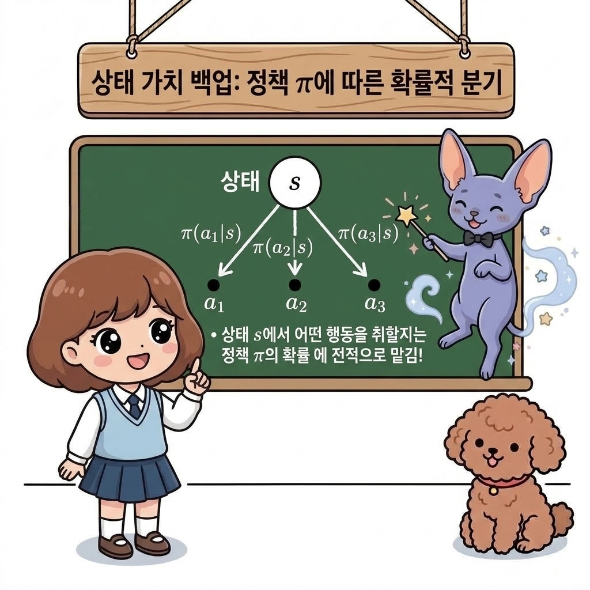
2. 행동 가치 함수 qπ(s, a) (그림 오른쪽)
- 최상단에서 상태 s와 특정 행동 노드 a(검은 점)가 단일 선으로 직결되어 있습니다.
- 여기서는 여러 갈래의 확률적 분기가 없습니다. 왜냐하면 행동 a는 정책 π의 확률에 따라 뽑히는 것이 아니라, 우리가 평가하고자 하는 특정 행동을 ‘자유롭게 지정’하여 강제 선택한 것이기 때문입니다.
- 따라서 에이전트는 정책 π와 상관없이 자신이 원하는 임의의 행동 a를 일단 저질러보고, 그 행동의 결과로 도착한 다음 상태 s’부터 비로소 정책 π를 따르게 됩니다.
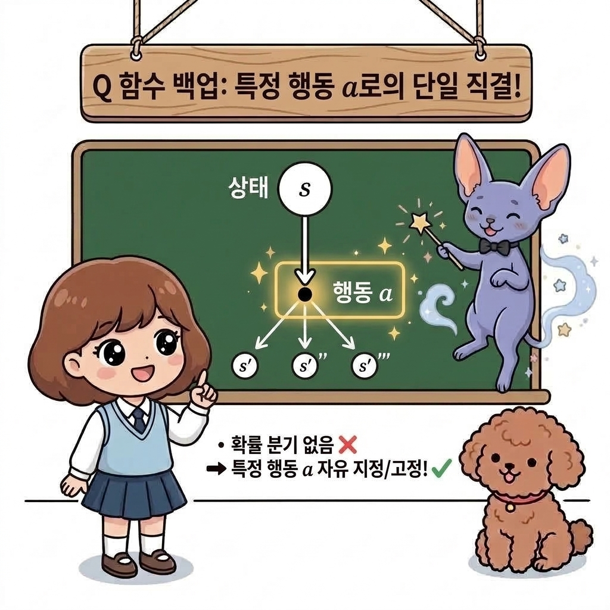
첫 번째 행동의 강제 실행과 교실 일상 비유
즉, 첫 번째 행동만큼은 현재 정책 π와 무관하게 학습자가 임의로 지정하여 강행해 보고, 두 번째 단계부터 정책 π를 충실히 따랐을 때의 기대 가치를 평가하는 것이 바로 Q 함수(행동 가치 함수)의 본질입니다.
이 차이를 일상적인 교실 생활 예시로 비유해 보겠습니다.
- 상태 가치 함수 vπ(s) (처음부터 평소 습관대로): 오늘 아침 교실(s)에 등교했을 때 오늘 하루 동안 얻을 평균 점수입니다. 교실에 들어서자마자 1교시 첫 행동부터 내 평소 공부 습관(정책 π, 예: 공부 80%, 매점 20%)에 따라 확률적으로 움직이며 하루를 보냅니다.
- 행동 가치 함수 qπ(s, a) (첫 시간은 내 고집대로 질러보기!): 오늘 교실(s)에 등교했을 때, 평소 습관과는 무관하게 일단 1교시만큼은 내 고집대로 ‘매점 가기(a)’라는 특정 행동을 강제 실행하고, 그다음 2교시부터 평소 습관(정책 π)을 충실히 따랐을 때 누리게 될 하루 만족도의 기댓값입니다.
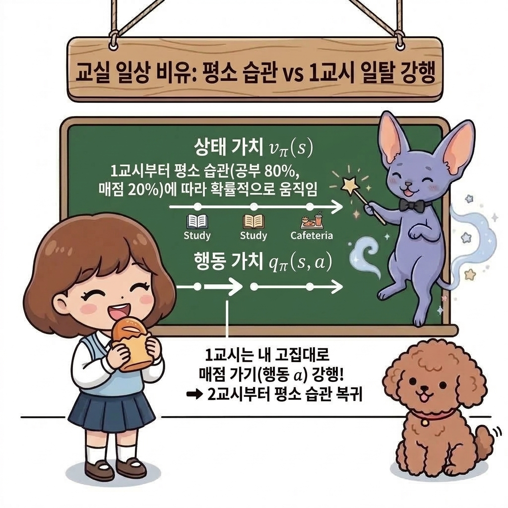
왜 행동 a를 임의로 지정해서 평가할까요? (정책 개선의 열쇠)
강화 학습의 목적은 ‘더 좋은 행동 방식(정책)’을 찾아 정책을 업그레이드하는 것입니다.
평균 점수판인 vπ(s)만 봐서는 “오늘 공부를 늘려야 할지, 매점 가기를 늘려야 할지” 알 수 없습니다. 하지만 Q 함수 qπ(s, a)를 통해 각 행동을 임의로 대입해 보면, “교실(s)에서 공부하기(a1)는 60점, 매점가기(a2)는 90점, 게임하기(a3)는 75점”이라는 행동별 성적표를 따로 받아볼 수 있습니다.
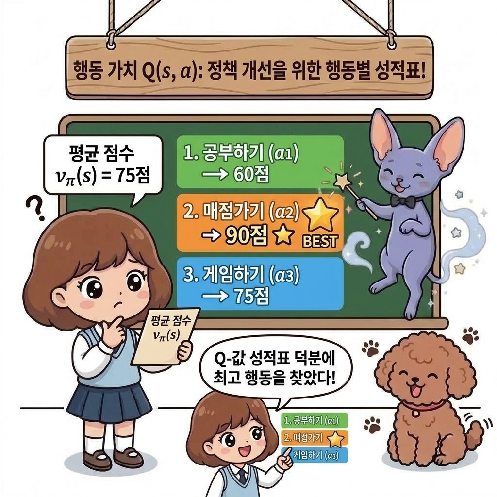
이렇게 개별 가치를 따로 구해놓아야, “아! 가치가 가장 높은 90점짜리 매점 가기(a2)의 행동 확률을 높이도록 내 정책(π)을 개선해야겠구나!” 하고 정책 개선(Policy Improvement)을 할 수 있게 됩니다.
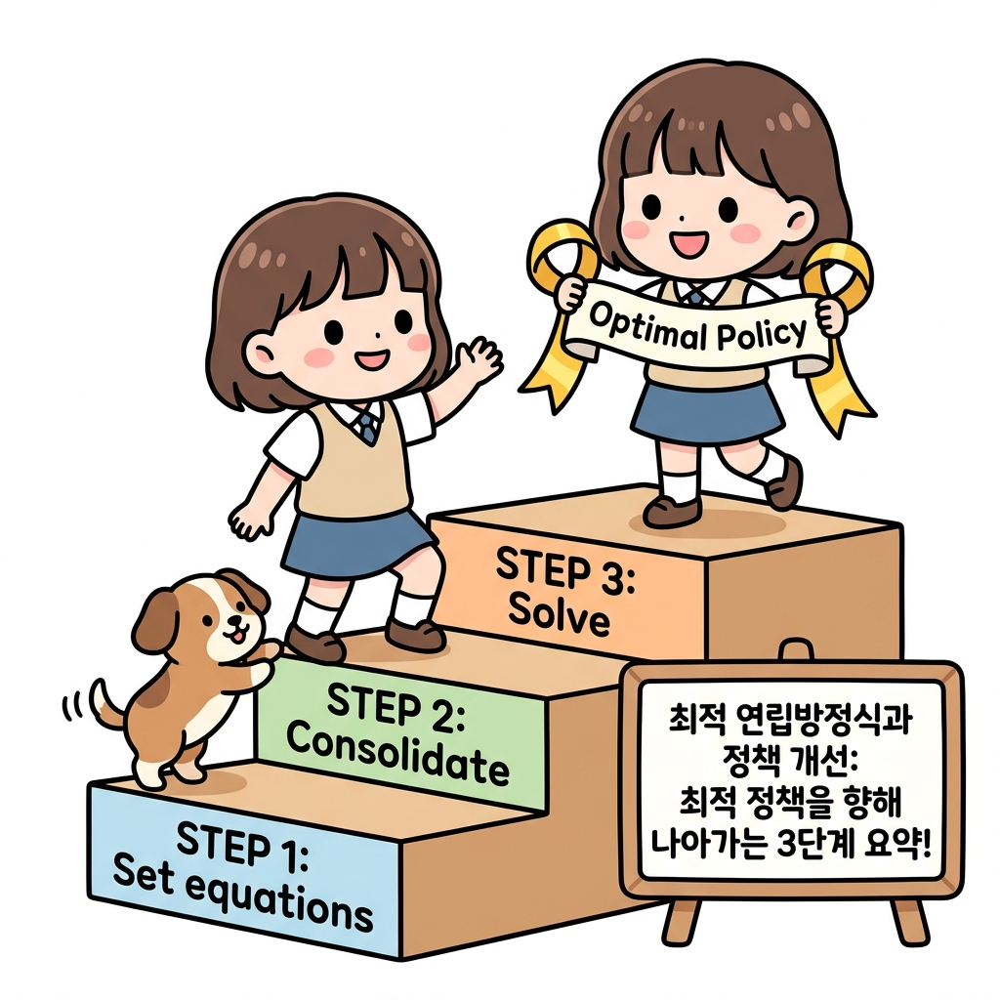
06.4.2 상태 가치와 Q 함수의 관계 (가중합 원리)
상태 가치 함수와 Q 함수의 본질적 연결
따라서 만약 Q 함수의 행동 a를 정책 π에 따라 선택하도록 설계하면 Q 함수와 상태 가치 함수는 완전히 같아집니다.

예를 들어: 교실에서의 세 가지 행동과 정책 가중합
앞서 살펴본 교실 예시를 통해 구체적으로 이해해 보겠습니다.
상태 s(교실)에서 에이전트가 선택할 수 있는 행동 후보가 {a1(공부하기), a2(매점가기), a3(게임하기)} 세 가지가 있고, 각 행동을 강제로 실행했을 때의 Q-값(행동별 성적표)이 다음과 같이 이미 매겨져 있다고 해보겠습니다.
- a1(공부하기)의 행동 가치: qπ(s, a1) = 60점
- a2(매점가기)의 행동 가치: qπ(s, a2) = 90점
- a3(게임하기)의 행동 가치: qπ(s, a3) = 75점
이제 에이전트가 특정 행동을 강제하지 않고, 자신의 평소 습관인 정책 π의 확률 분포에 따라 행동을 선택한다고 가정해 보죠.
-
π(a1 s) = 0.5 (50% 확률로 공부하기 a1 선택) -
π(a2 s) = 0.3 (30% 확률로 매점가기 a2 선택) -
π(a3 s) = 0.2 (20% 확률로 게임하기 a3 선택)
그렇다면 오늘 아침 교실(s)에 등교했을 때 기대할 수 있는 종합 평균 점수(상태 가치 vπ(s))는 어떻게 구할 수 있을까요?
바로 “각 행동을 고를 확률”에 “그 행동의 점수(Q-값)”를 곱한 뒤 모두 더한 가중 합(가중 평균, Weighted Sum)으로 간단히 구해집니다.
- 교실의 기대 수익(평균 점수) = (0.5 × 60점) + (0.3 × 90점) + (0.2 × 75점) = 30 + 27 + 15 = 72점
즉, 상태 가치 vπ(s)는 완전히 별개의 새로운 값이 아니라, 각각의 개별 행동 가치 qπ(s, a)들을 현재 정책 π의 선택 확률 비율대로 골고루 섞어 합친 평균값에 불과합니다.
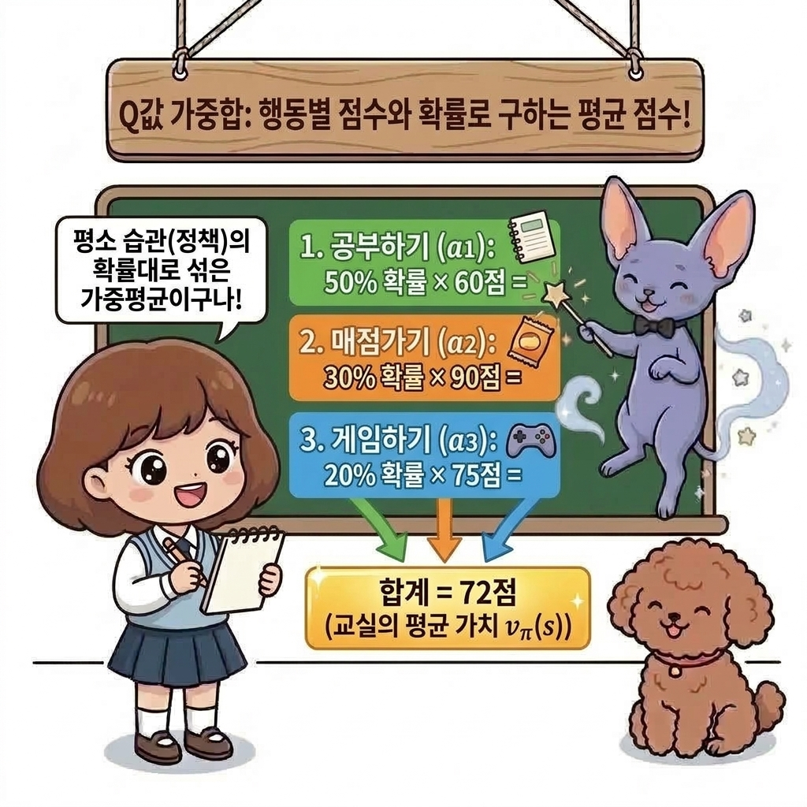
가중합 수식 도출 [식 06.11]
\[\begin{aligned} &\pi(a_1 \mid s) q_{\pi}(s, a_1) + \pi(a_2 \mid s) q_{\pi}(s, a_2) + \pi(a_3 \mid s) q_{\pi}(s, a_3) \\ &= \sum_{a = \{a_1, a_2, a_3\}} \pi(a \mid s) q_{\pi}(s, a) \end{aligned}\]그리고 이 식은 상태 가치 함수와 똑같은 조건에서의 기대 수익입니다.
따라서 다음 식이 성립합니다. \(v_{\pi}(s) = \sum_a \pi(a \mid s) q_{\pi}(s, a)\)
[식 06.11]
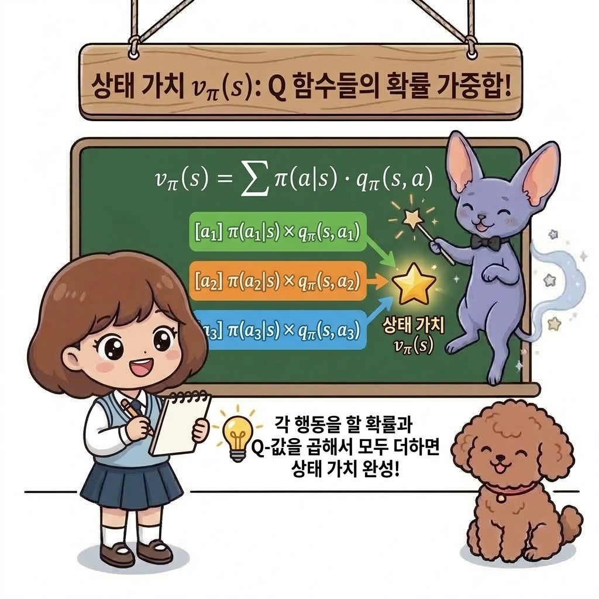
06.4.3 행동 가치 함수를 이용한 벨만 방정식
이어서 행동 가치 함수(Q 함수)를 이용한 벨만 방정식을 본격적으로 도출해 보겠습니다.
앞서 06.2절에서 상태 가치 함수의 벨만 방정식을 유도할 때, 가장 중요한 출발점은 “전체 수익 Gt를 ‘지금 당장 손에 쥐는 보상 Rt‘과 ‘다음 스텝부터 얻을 미래 수익 할인합 γGt+1‘의 재귀적 형태로 쪼개는 것(Gt = Rt + γGt+1)”이었습니다.
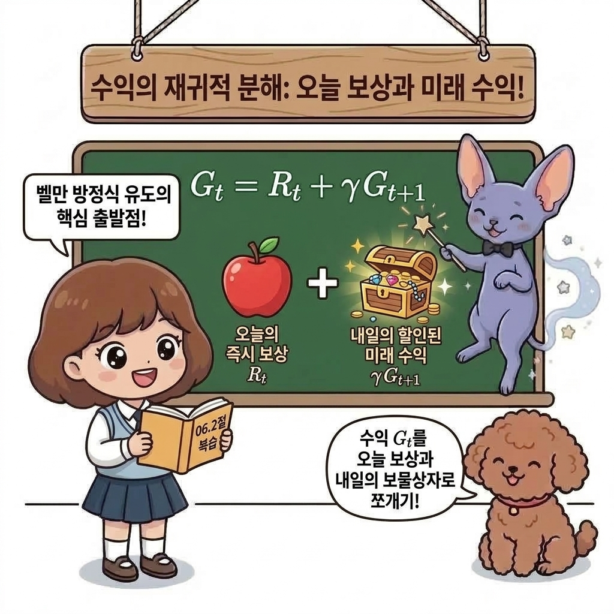
조건부 행동 a가 추가된 수익의 재귀적 분해
단, 상태 가치 함수와의 결정적인 차이점은 조건부에 상태 St = s뿐만 아니라 내가 지정한 행동 At = a까지 함께 주어져 있다는 점입니다.
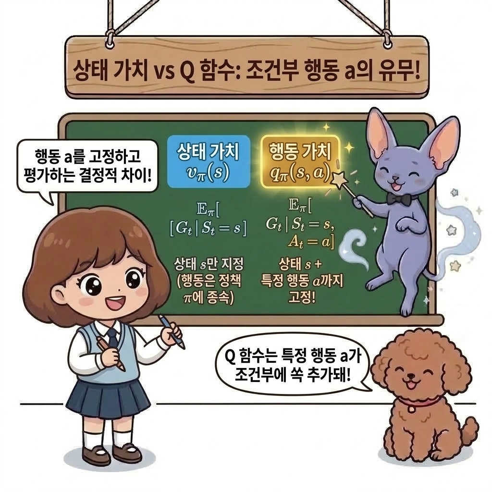
[식 06.12] Q 함수의 1단계 분해식 도출
\[\begin{aligned} q_{\pi}(s, a) &= \mathbb{E}_{\pi}[G_t \mid S_t = s, A_t = a] \\ &= \mathbb{E}_{\pi}[R_t + \gamma G_{t+1} \mid S_t = s, A_t = a] \end{aligned}\][식 06.12]
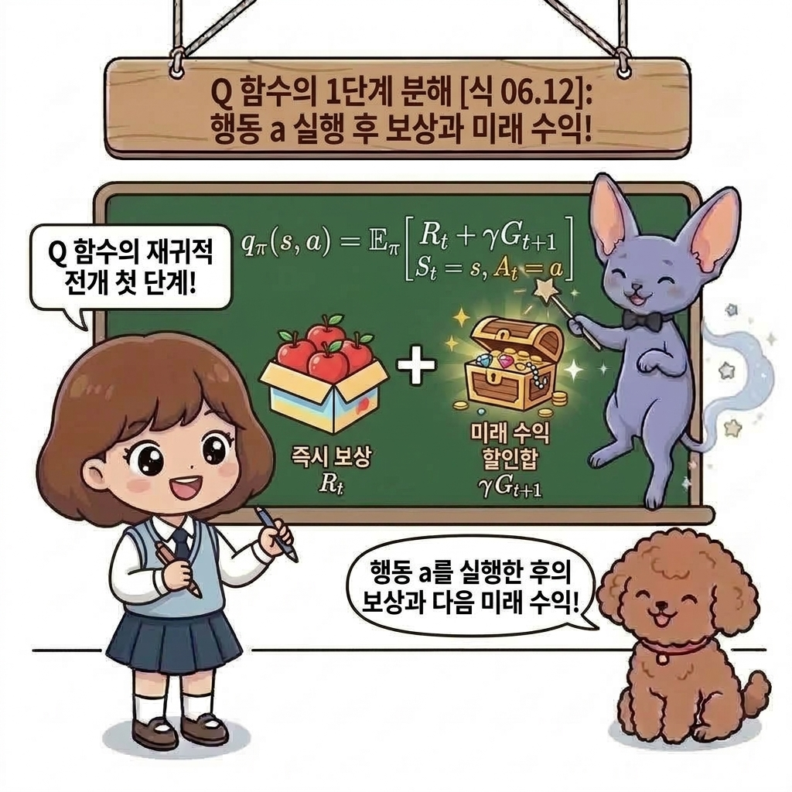
1단계 시간 전개: 상태 전이 확률과 다음 상태 가치 vπ(s’)의 결합
[식 06.12]에서 상태 s와 내가 실행한 행동 a는 이미 명확히 정해져 있습니다.
에이전트가 상태 s에서 행동 a를 취하면, 환경의 규칙에 따라 다음 상태 s’로 넘어가게 됩니다. 이때:
-
다음 상태 s’로 이동할 확률은 *상태 전이 확률 *p(s’ s, a)**로 주어집니다. - 그 결과 에이전트가 받게 되는 즉시 보상은 보상 함수 r(s, a, s’)에 의해 결정됩니다.
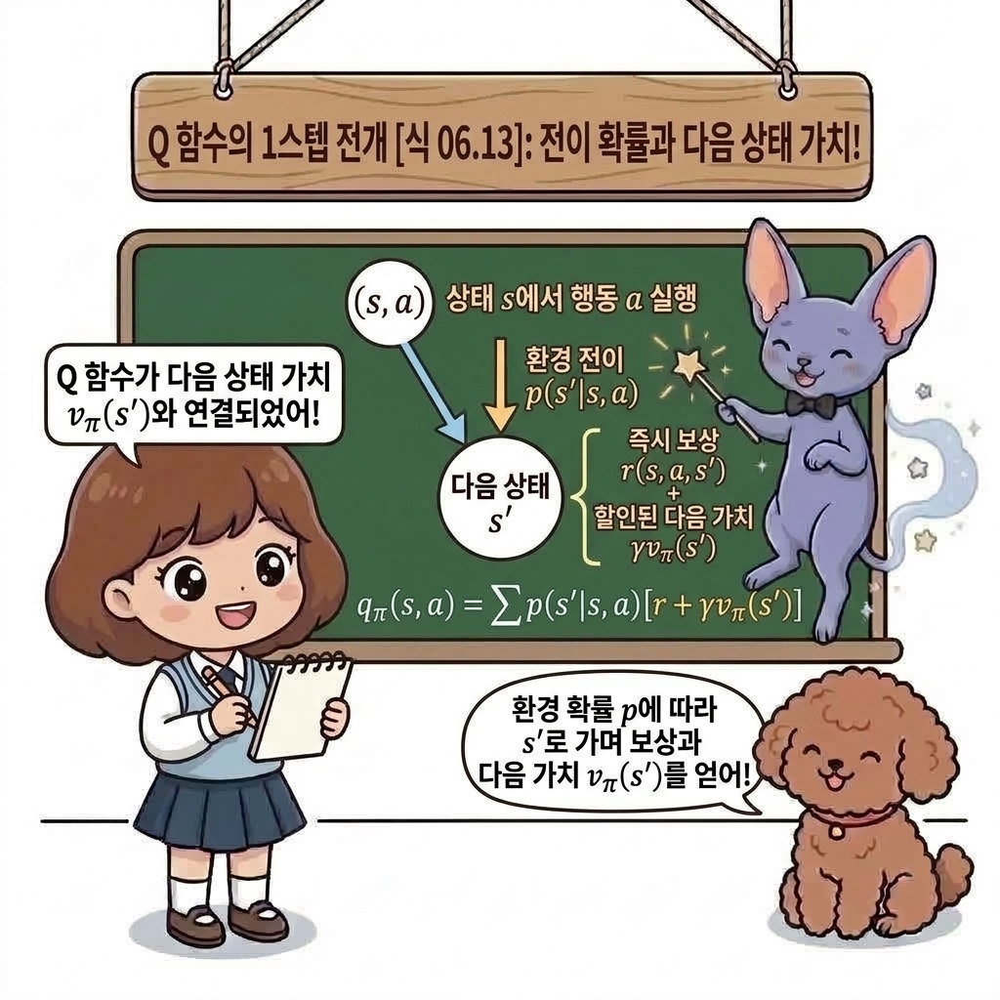
[식 06.13] Q 함수 1스텝 전개식의 단계별 유도
1단계: 기댓값 기호의 분배 (선형성)
기댓값 연산자 𝔼를 덧셈 기호를 기준으로 ‘당장의 보상’과 ‘미래 수익’으로 각각 분리합니다.
\(q_{\pi}(s, a) = \mathbb{E}_{\pi}[R_t \mid S_t = s, A_t = a] + \gamma \mathbb{E}_{\pi}[G_{t+1} \mid S_t = s, A_t = a]\)
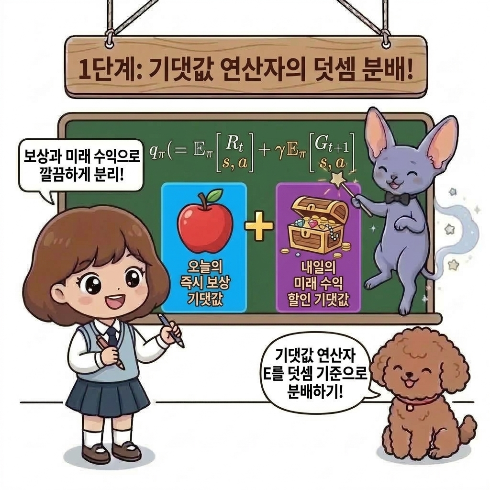
2단계: 즉시 보상과 미래 수익을 확률 전이로 표현
-
첫 번째 항 (즉시 보상의 기댓값): 행동 a를 취했을 때 환경 규칙에 따라 도달할 수 있는 모든 다음 상태 s’에 대해, 이동할 전이 확률 p(s’ s, a)과 그때 받게 되는 보상 r(s, a, s’)을 곱해 합산합니다.
- 두 번째 항 (미래 수익의 기댓값): 다음 상태 s’에 도착한 순간부터(St+1 = s’) 에이전트는 평소 정책 π를 따릅니다. 따라서 상태 s’에서 앞으로 얻게 될 기대 수익(기댓값)은 다름 아닌 다음 상태의 가치 vπ(s’)입니다!
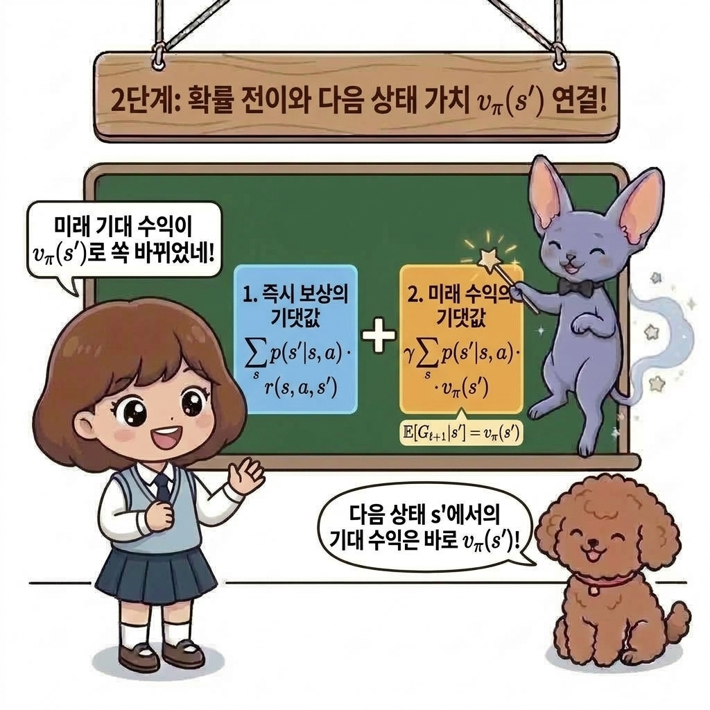
3단계: 공통 확률 가중치로 묶기 ([식 06.13] 도출)
앞서 구한 두 항은 모두 공통으로 상태 전이 확률 합 기호를 가지고 있습니다.
따라서 공통 인수인 전이 확률을 바깥으로 묶어내면 최종적으로 다음 식이 완성됩니다. \(\begin{aligned} q_{\pi}(s, a) &= \sum_{s'} p(s' \mid s, a) r(s, a, s') + \gamma \sum_{s'} p(s' \mid s, a) v_{\pi}(s') \\ &= \sum_{s'} p(s' \mid s, a) \left\{ r(s, a, s') + \gamma v_{\pi}(s') \right\} \end{aligned}\)
[식 06.13]
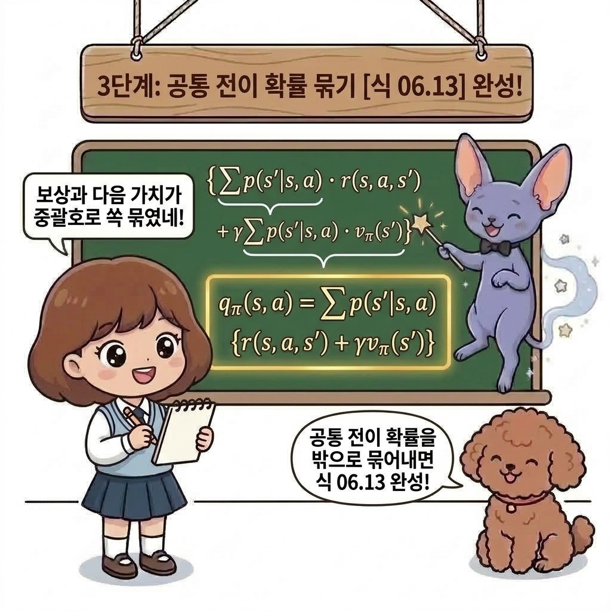
즉, [식 06.13]은 “내가 고른 행동 a를 실행했을 때의 Q-값은, 그로 인해 도착할 수 있는 모든 다음 상태 s’에 대해 [지금 받는 즉시 보상 + 다음 상태의 할인된 가치 vπ(s’)]를 전이 확률에 따라 가중평균한 것”이라는 매우 직관적인 물리적 의미를 담고 있습니다.
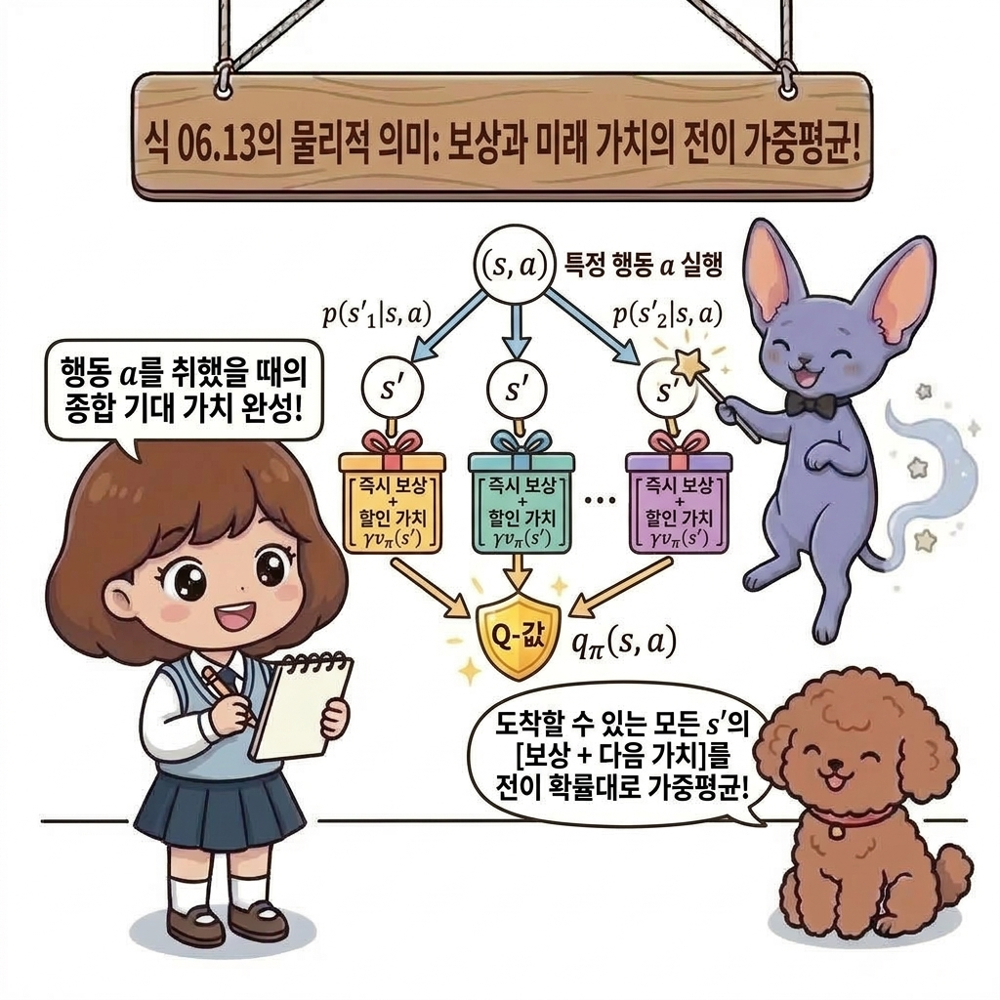
또한 [식 06.11]을 이용하면 상태 가치 함수 vπ(s’)는 Q 함수를 사용하여 다음처럼 쓸 수 있습니다. \(q_{\pi}(s, a) = \sum_{s'} p(s' \mid s, a) \left\{ r(s, a, s') + \gamma \sum_{a'} \pi(a' \mid s') q_{\pi}(s', a') \right\}\)
[식 06.14]
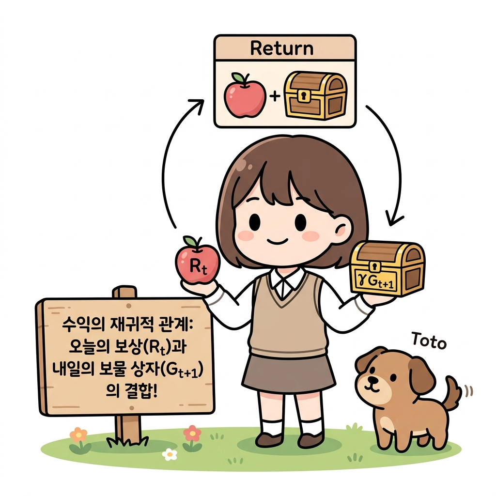
[식 06.14]의 a’는 시간 t+1에서의 행동입니다.
이 [식 06.14]가 바로 행동 가치 함수(Q 함수)를 이용한 벨만 방정식입니다.
06.4.4 백업 다이어그램: Q 함수 벨만 방정식의 재귀적 흐름
행동 가치 함수(Q 함수)의 벨만 방정식인 [식 06.14]를 백업 다이어그램(Backup Diagram)으로 시각화하면, 수식에 담긴 기호들이 실제로 어떤 순서로 상호작용하고 가치를 거슬러 올려보내는지 한눈에 파악할 수 있습니다.
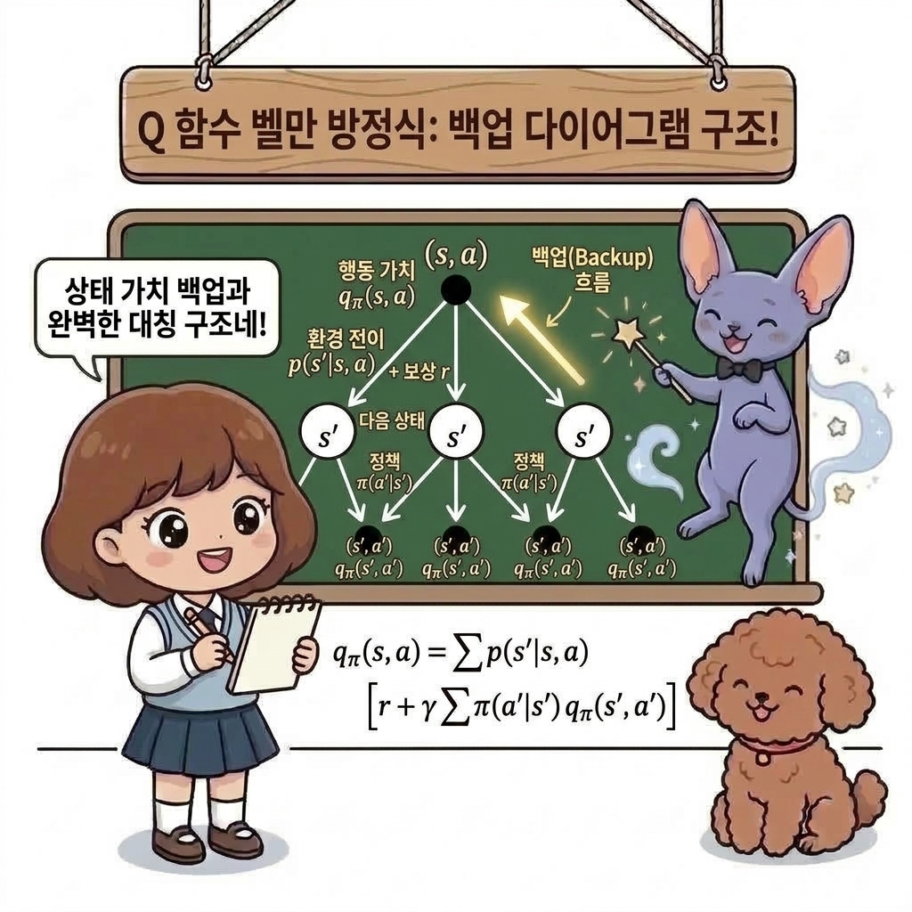
위 다이어그램에서 정보가 위아래로 흐르는 과정은 다음과 같습니다.
- 출발점: 최상단 행동 노드 (s, a) (검은 점)
우리가 지금 평가하고자 하는 기준점으로, 상태 s에서 임의로 특정 행동 a를 딱 선택한 순간의 가치인 qπ(s, a)를 나타냅니다. -
*1단계 분기: 환경 전이 확률과 즉시 보상 (p(s’* s, a) + r)** 에이전트가 행동 a를 실행했으므로 이제 공은 환경에게 넘어갑니다. 환경의 물리 법칙과 규칙(상태 전이 확률 p(s’ s, a))에 따라 다음 상태 s’(흰색 원)들로 갈라지며, 이때 이동에 따른 즉시 보상 r(s, a, s’)을 받습니다. -
*2단계 분기: 정책에 따른 다음 행동 선택 (π(a’* s’))** 다음 상태 s’에 도착한 이후부터 에이전트는 평소 습관(정책 π)을 따릅니다. 정책의 확률 분포 π(a’ s’)에 따라 다음 행동들(a’)로 나뭇가지처럼 분기되며, 맨 아래 리프 노드에 도달하게 됩니다. 이 말단 노드가 바로 다음 시점의 행동 가치인 qπ(s’, a’)(검은 점)입니다. - 아래에서 위로 거슬러 올라오는 백업(Backup) 계산
-
안쪽 가중합(정책): 맨 아래의 다음 행동 가치 qπ(s’, a’)들을 정책 확률 π(a’ s’)로 곱해 더하면, 다음 상태의 가치 vπ(s’) = ∑ π(a’ s’) qπ(s’, a’)가 복원됩니다. -
바깥쪽 가중합(환경): 여기에 할인율 γ를 곱하고 즉시 보상 r을 더한 뒤, 환경 전이 확률 p(s’ s, a)로 한 번 더 곱해 더해주면 최종적으로 최상단의 행동 가치 qπ(s, a)가 완성됩니다.
-
상태 가치 백업 다이어그램과의 완벽한 대칭성
- 상태 가치 함수 vπ(s)의 백업 다이어그램:
상태 노드(○) → [정책 π] → 행동 노드(●) → [환경 p] → 다음 상태 노드(○) - 행동 가치 함수 qπ(s, a)의 백업 다이어그램:
행동 노드(●) → [환경 p] → 상태 노드(○) → [정책 π] → 다음 행동 노드(●)
이처럼 Q 함수의 백업 다이어그램은 상태 가치의 백업 다이어그램과 시작 노드의 종류(검은 점 vs 흰 원)와 전이 순서가 서로 반대로 맞물리는 아름다운 대칭을 이루고 있습니다.
06.4.5 학습 정리
-
상태 가치 vπ(s)와 행동 가치 qπ(s, a)의 본질적 차이: 상태 가치 vπ(s)는 상태 s에 진입하자마자 첫 행동부터 평소 정책 π의 확률 분포대로 움직였을 때의 ‘종합 평균 점수’입니다. 반면 행동 가치(Q 함수) qπ(s, a)는 첫 번째 행동만큼은 현재 정책과 무관하게 학습자가 원하는 임의의 특정 행동 a를 강제로 실행해보고, 그 다음 두 번째 단계부터 정책 π를 따랐을 때의 기대 수익을 평가하는 ‘행동별 세부 성적표’입니다.
-
Q 함수가 정책 개선(Policy Improvement)의 나침반이 되는 이유: 종합 평균 점수(vπ(s))만 알아서는 어떤 행동을 늘리고 줄여야 할지 알 수 없습니다. 하지만 각 행동 후보에 대한 Q-값(예: 공부하기 60점, 매점가기 90점, 게임하기 75점)을 구비해 두면, 가치가 가장 높은 90점짜리 행동의 선택 확률을 높이도록 내 정책을 더 나은 방향으로 업그레이드(정책 개선)할 수 있습니다.
-
상태 가치와 Q 함수의 확률 가중합 관계 [식 06.11]: 상태 가치 vπ(s)는 완전히 새로운 물리량이 아니라, 상태 s에서 가능한 모든 행동 가치 qπ(s, a)들을 현재 정책의 행동 선택 확률 π(a | s)로 곱해 전부 합산한 가중 평균(가중합)입니다. \(v_{\pi}(s) = \sum_a \pi(a \mid s) q_{\pi}(s, a)\)
-
행동 가치 함수(Q 함수)의 벨만 방정식 [식 06.14]: 수익 Gt를 즉시 보상 Rt과 미래 수익 할인합 γGt+1로 재귀 분해하고, 환경 전이 확률 p(s’ | s, a)과 다음 상태 가치 vπ(s’)를 결합한 뒤, 다시 vπ(s’)를 다음 시점의 Q 함수 가중합으로 치환함으로써 현재의 Q-값과 다음 시점의 Q-값들이 맞물리는 벨만 방정식이 완성됩니다. \(q_{\pi}(s, a) = \sum_{s'} p(s' \mid s, a) \left\{ r(s, a, s') + \gamma \sum_{a'} \pi(a' \mid s') q_{\pi}(s', a') \right\}\)
-
백업 다이어그램의 순환 구조와 대칭성: Q 함수의 백업 다이어그램은 상단의 행동 노드 (●)에서 출발하여 환경 전이 확률 p를 통해 다음 상태 노드 (○)들로 가고, 다시 에이전트의 정책 π에 의해 아래의 다음 행동 노드 (●)들로 나뭇가지처럼 갈라집니다. 맨 아래의 다음 Q-값들이 위로 거슬러 올라와(Backup) 현재의 Q-값을 계산하며, 이는 상태 가치 함수의 백업 다이어그램(
상태 ○ → 정책 π → 행동 ● → 환경 p → 다음 상태 ○)과 시작 노드 및 전이 순서가 완벽한 대칭을 이룹니다.